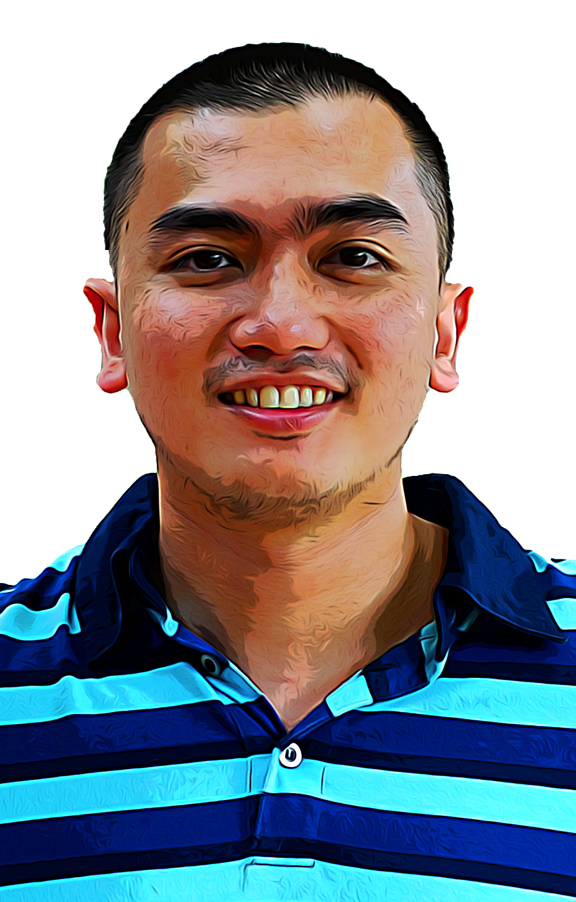

|  | Joseph JacintoA graphic designer with more than 15 years of experience, seeking for a creative position where I can utilize my skills as a designer and constantly apply my knowledge of diverse design skills set and extensive graphics arts. I am committed to work and enjoy new challenges that would bring out high attention to detail and time management in my projects. |
| Dates | Work |
|---|---|
| Nov 2012 - Oct 2016 | Graphic Designer |
| May 2012 - Nov 2012 | Graphic Designer |
| Adobe Photoshop | ⭐⭐⭐⭐⭐ |
| Adobe Illustrator | ⭐⭐⭐⭐⭐ |
| Adobe InDesign | ⭐⭐⭐⭐⭐ |